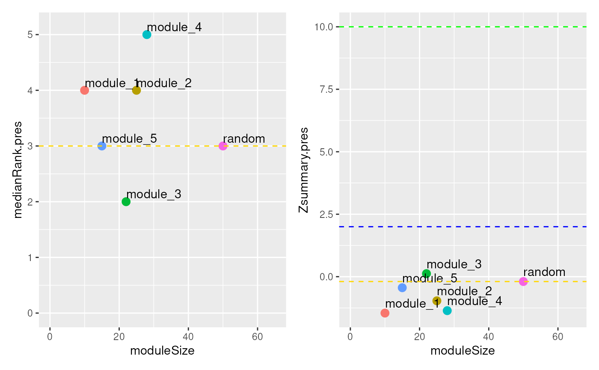

Plot module preservation statistics
Usage
plotModulePreservation(
modulePreservation_results,
show_random = TRUE,
remove_module = NULL
)Arguments
- modulePreservation_results
The output of modulePreservation
- show_random
If
TRUE, shows the random module in the plots.- remove_module
The name of a module to be hidden from the plots.
Value
Two ggplot2 plot objects combined by patchwork. Plots the
module preservation statistics generated by
modulePreservation.
Examples
# Get random ModularExperiments with rnorm, with 100 rows (features),
# 20 columns (observations) and 5/10 modules
me_1 <- ReducedExperiment:::.createRandomisedModularExperiment(100, 20, 5)
me_2 <- ReducedExperiment:::.createRandomisedModularExperiment(100, 20, 10)
# Test module preservation (test modules from dataset 1 in dataset 2)
mp <- modulePreservation(me_1, me_2, verbose = 0, nPermutations = 3)
# No significant preservation, since these were random modules
plotModulePreservation(mp)
